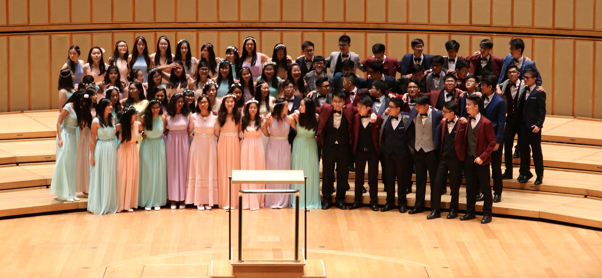
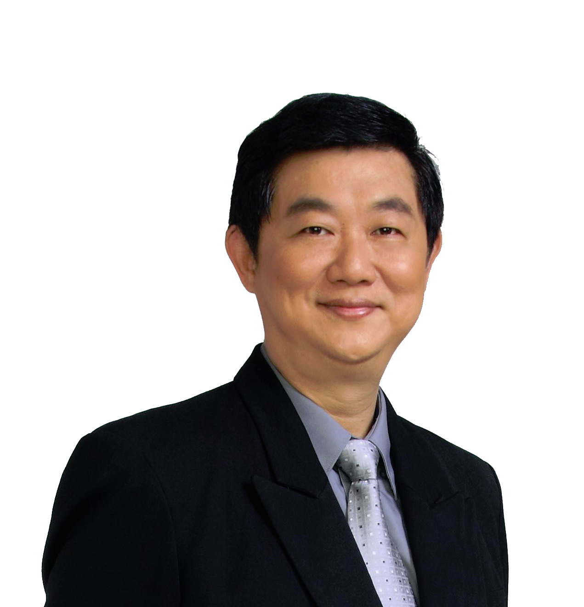

About
The Choir

Under the guidance of esteemed choral director, Professor Nelson Kwei, Victoria Junior College Choir has grown from strength since its humble beginnings in 1985. The Victoria Junior College Choir has become one of the most celebrated Singaporean school-based choirs in the international scene and now boasts a comprehensive repertoire of choral pieces, ranging from majestic sacred pieces to dynamic folklore pieces from all over the world. The VJC Choir you see today is undoubtedly the product of the blood, sweat and tears of its members, both past and present.
Not only was the choir the first in Singapore to win the Olympic World Choir Games Championship title - the most prestigious international choral award, it was also the first Asian choir to win both the esteemed Audience Priza and Grand Prix Award in the 9th Riva Del Garda International Choral Competition held in 2006. In the Venezia in Musica 2010 International Choir Competition and Festival held by the international choral body, Musica-Mundi Interkultur, the choir emerged as first in the competition series, receiving the Diploma of Honour for furthest achievement, and was also the highest scorer for the entire competition with 3 high gold awards.
Last year, the Choir was awarded the Certificate of Distinction in the 2013 Singapore Youth Festival (SYF) Arts Presentation. The choir also clinched Category Champions and the prestigious title of Chanson de Voyager in the 2013 Voyage of Songs International Choral Festival. Currently, Victoria Junior College Choir is ranked 7th for Mixed Choirs and 7th for Male Choirs, by the INTERKULTUR World Rankings.
"No Man is An Island" - the choir's anthem, is a legacy passed down over the years, which conveys our heartfelt love towards both music and our fellow choir members. Indeed, a choir like Victoria Junior College's is formed with the combined efforts of everyone. Under the tutelage of our resident conductor Professor Nelson Kwei, and with the sacrifices made by every choir member, VJC Choir continues to pursue excellence in choral singing both locally and abroad to ensure that the flame of our legacy will continue to burn bright.
Our Conductor

Professor Nelson Kwei, the Principal of Singapore Raffles Music College, is an accomplished conductor, conservatorium lecturer, editorial advisor, music arranger and vocal tutor in the music scene. He is a Fellow from the London College of Music, has a Licentiate in singing from the Guildhall School of Music and an Advance Post-Graduate in Choral Conducting from the Royal Academy of Music (London).
In 1993, Professor Kwei was honoured with the "National Youth Service Award", the highest Youth Award in Singapore, in recognition of his significant contribution in the field of choral art. In 1999, he was awarded with the "Culture Award" by the Japanese Chamber of Commerce and Industry and in 2001, the Rotary Club honoured him as the "Ambassador of the Arts" for Singapore.
On the international level, Professor Nelson Kwei won the prestigious "Outstanding Choral Director Award" at the International Choral Competition in Germany, 1998 & 1999 and in Prague, 2002 & 2004. In recent years, he has led his choirs to 8 Gold Medals including 3 Choir Olympic Champions in the World Choir Games held in Bremen, Germany & Xiamen, China. His choir was also the first Asian choir to win the Grand Prize & Audience Prize at the prestigious Concorso Corale Internazionale held in Riva Del Garda, Italy. In 2008, he was also conferred the "Conductor Prize" in the recent 10th edition of the internationally-acclaimed choral competition.
Presently, he is an executive member of the National Arts Council's Advisory Board for Choral Development in Singapore, the Honorary Chairman of the Choral Directors' Association(Singapore) and the President of the Singapore Federation for Choirs & Conductors, as well as the Artistic Director of "A Voyage of Songs" and "Concentus Orientale", both of which are prominent international choral competitions. Professor Nelson Kwei is also invited as both clinician and adjudicator in many top international choral festivals and competitions including the World Choir Games Series. Currently, he is the Conductor of many prestigious schools, university and semi-professional choirs in Singapore that has won numerous national and international accolades.
About the Website
This website was made mainly from the boredom that arose from studying for 'A' Levels in 2015. After our humble Google Sites, we have undertaken the job of making the choir website look extremely amazing and stunning so that people would be more inclined to contribute and keep it updated.
We believe that every batch, no matter the people inside or how the batch worked, has something to share in terms of music and how they interacted with one another. Over the past decade, the choir has done a extremely wide range of music, and each batch that goes through their 2 years in VJC all have their own unique sound. This website seeks to archive and document the past of VJChoir (instead of leaving their photos and other stuff in the choir room drawers and lockers lol), and also to provide a one stop place for all to enjoy and peruse through the choir's repertoire over the years.
Videos and photos from various years are scattered across many social media platforms, and this place seeks to provide all future and past batches a centralised place for easy access to music, and any memories they may seek.
We hope you genuinely enjoy looking through this website, and that somehow or another VJChoir has changed your life for the better. If it's for the worse then we can't really help you. Sorry.